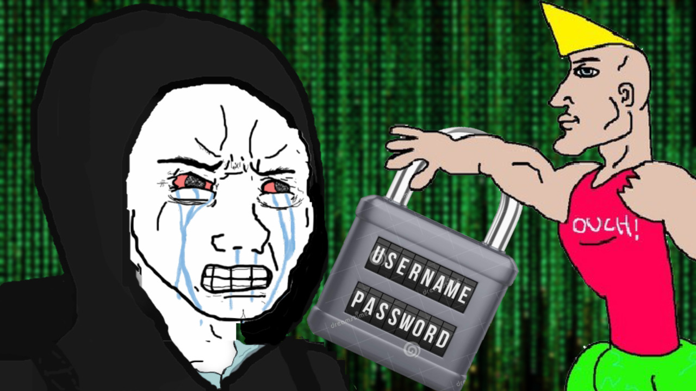
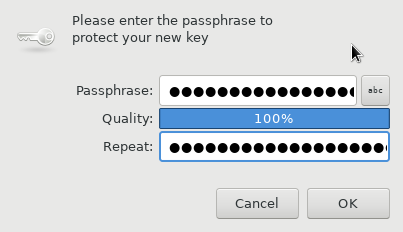
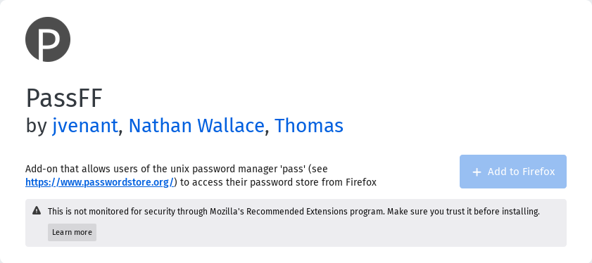
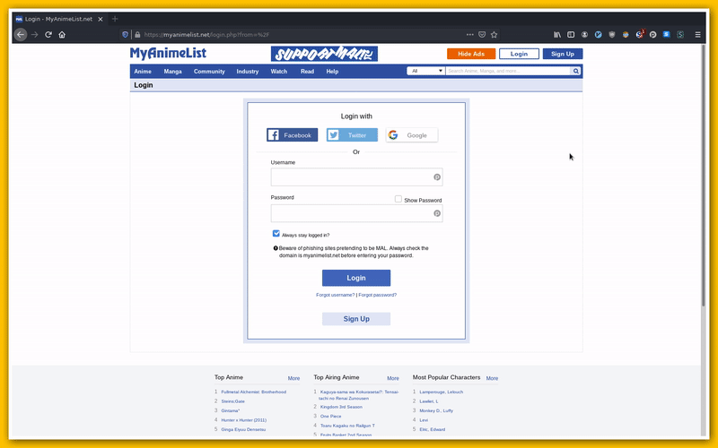

Managing Your Passwords with GPG and Pass
Explaining PGP Cryptography
The Problem with Symmetric Keys
The concept of a symmetric key is pretty simple. Let's suppose that we have a box with a lock. The symmetric key will be able to open (decrypt) and close (encrypt) the box. Just like any other key, you can make a copy and give it to a friend. Can you see it already? If a third party intercepts the packets that you sent to a friend, this person might also able to open and close the box. So it's pretty obvious this is not the way to go.
The Soulution
PGP solves this problem through asymmetric keys. In this method there are two keys: the private key and the public key. As the name suggests the public key is the one that is going to be publicly available, so that anyone can encrypt whatever they want to send to you. The private key is responsible for decrypting, this one you should keep to yourself. Be aware that in RSA algorithm, if you have the private key, you are able to calculate the public key.
The Risk of Using a Decentralized Password Manager
- If you lose your password store, there will be no such file to be decrypted.
- If you lose your private key, you won't be able to decrypt your files.
SO BACKUP YOUR KEYS AND YOUR PASSWORD STORE. You've been warned.
Installation
We have to install two packages:
- pass
- pinentry-gtk
Fedora
dnf install pass pinentry-gtkHands-On GPG and Pass
First of all let's generate a new pair of keys in order to be able to encrypt our passwords.
## Generates a new key
gpg --full-gen-key
From now on, we will be referring to this pair of keys as the email we've provided.
When you hit "O", you will be prompted with the following window asking for a password:
This password will be used with the private key to decrypt the password. I guess we can call that a two-factor authentication.
Now that we've generated a pair of keys, it's time to backup those. THIS IS AN EXTREMELY IMPORTANT STEP!
## Exports public key
gpg --export --armor josh.nickles@gmail.com > publ.asc
## Exports private key
gpg --export-secret-keys --armor josh.nickles@gmail.com > priv.asc
I recommend you to try deleting your keys and importing them again. You'll have to do this sooner or later. This step is not needed but definetely worth it.
## In case you want to delete your keys
gpg --delete-secret-and-public-keys josh.nickles@gmail.com
## This is how you will import your keys
gpg --import publ.asc priv.asc
## This command will allow us to set the trust level of the key
gpg --edit-key josh.nickles@gmail.com
Alright, our journey with GPG is over. By now you should know how to generate, import, export, delete and trust keys.
Now we are going to use Pass, which is going to be responsible for encrypting out passwords with the keys that we've just generated!
First we need to initialize Pass and pass our key-id as a parameter.
Reminder: we're using the email as an alias to the key-id.
## Init
pass init josh.nickles@gmail.com
## Inserts your password
pass insert myanimelist.net/myusername

## Removes a password
pass rm myanimelist.net/myusername
## Returns a list of inserted websites
pass ls
## Generates password (where n is the length of the passwd)
pass generate myanimelist.net/myusername 15
## Retrieves password
pass myanimelist.net/myusername
## Copies password to clipboard
pass -c myanimelist.net/myusername

I've covered only the basics to get you started, for more information check:
YOUR PASSWORDS LIVE IN ~/.password-store. SO MAKE SURE TO BACKUP IT EVERYTIME YOU MODIFY THIS FOLDER.
passff - Pass Plugin for Firefox
Pass has a variety of extensions and compatible clients that make it usable pretty much any browser and operating system.
We will need to install the following programs:
The following line should be enough to install passff-host. If you run into problems, I recommend you to check their github page, which has been linked above.
curl -sSL github.com/passff/passff-host/releases/latest/download/install_host_app.sh | bash -s -- firefoxThe next step is pretty simple. Open the passff link and then click on Add to firefox.
 